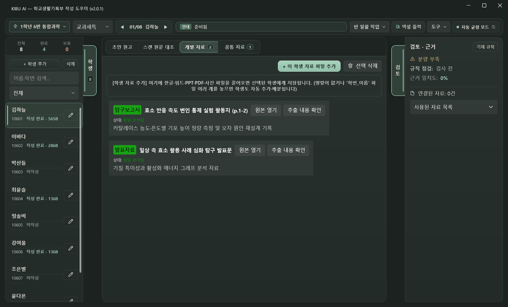

Step 1 · 빠른 자료 정리
스캔 묶음 PDF부터 한글·PPT까지, 기다림 없이 학생별로 배분
복합기로 한꺼번에 스캔한 30명 활동지 PDF를 열어도 AI 분석을 하염없이 기다릴 필요가 없습니다. 2초 만에 페이지가 바로 열리고, 학생당 장수(1~4쪽)와 [① 학번 순서대로 일괄 배정]만 누르면 순식간에 끝납니다.
- 한글(.hwpx·.hwp)·워드(.docx)·발표자료(.pptx)·설문 엑셀·사진 모두 그대로 지원
- 명렬표가 없어도 OK: 동아리·선택과목처럼 명렬표가 없을 때도
학번_이름파일들을 끌어다 놓으면 학생 명단 생성부터 분류까지 자동으로 해 줍니다. - 순서가 섞였거나 이름이 빠져도 안심: 순서가 섞인 스캔본은 AI 학번·이름 인식을 쓰고, 이름을 안 쓴 활동지는 [미배정·무기명 임시 보관]으로 먼저 읽어 둔 뒤 나중에 주인을 찾아 합칠 수 있습니다.


